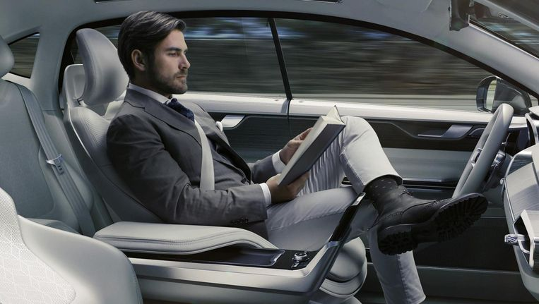
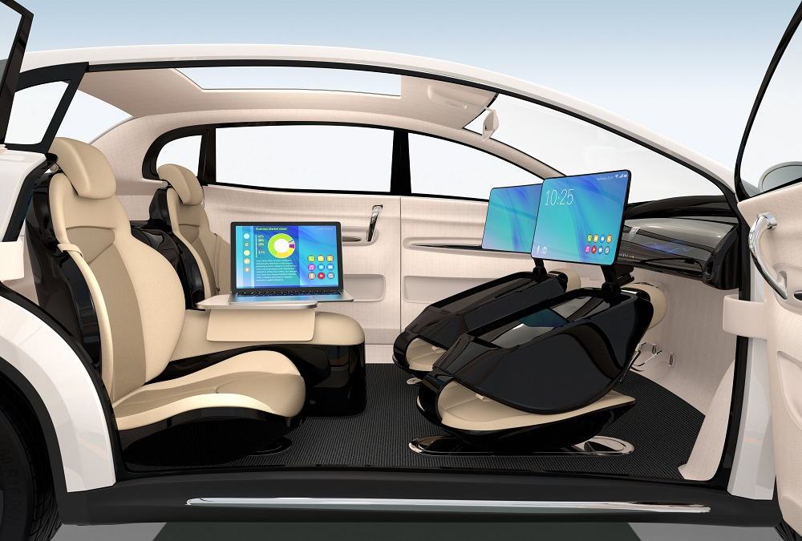
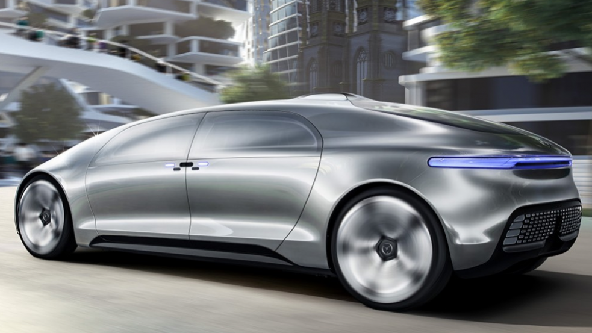

Waarom?
 Wij hebben deze website gemaakt om informatie te verstrekken over zelfrijdende autos, hoe ze werken, waarom ze er komen, wanneer ze op de markt komen en door wie. Verder kunnen vragen van u beantwoorden via de contactpagina.
De toekomst
Zelfrijdende autos zijn de toekomst wordt al jaren gezegd door verschillende wetenschappers. Zo zijn er bijvoorbeeld al testen geweest met zelfrijdende autos op snelwegen. Zelfrijdende autos kunnen de chauffeur vervangen waardoor het verkeer waarschijnlijk een stuk veiliger worden aangezien geen menselijke fouten gemaakt kunnen worden. Er is alleen nog een probleem met ethisch verantwoordelijke keuzes maken. Zo zijn er scenario's waarbij er een keuze gemaakt moet worden tussen wie er sterft. Dat zijn moeilijke keuzes voor een persoon. Laat staan voor een machine. Daarom zou het nog lang kunnen duren voordat er zelfrijdende auto's op de markt komen voor consumenten
Wanneer is het gunstig
Zelfrijdende autos zijn erg gunstig, zeker als het aankomt op de veiligheid en productiviteit van men tijdens de rit. Zelfrijdende autos zijn veiliger dan normale autos, aangezien ze door een computer worden gestuurd, en die computer, als goed geprogrammeerd, maakt geen enkele fout. De mens daarentegen heeft genoeg ongelukken veroorzaakt op de weg. Men kan productiever zijn tijdens de rit. Ze hoeven zich namelijk geen zorgen te maken over de weg, dit doet de zelfrijdende auto al. De zelfrijdende auto zal dus zeker gunstig blijken op de weg. Minder ongelukken en men kan meer doen tijdens de rit, maar ook machines kunnen fouten maken. Hiervoor moeten de originele bestuurders wel een oogje op de weg houden voor als het fout gaat.
| Situatie | Gunstig? | Eventueel probleem |
|---|---|---|
| Korte afstanden | Nee | te veel moeite voor te korte rit |
| Lange afstanden | Ja | geen probleem |
| Snelwegen | Ja | geen probleem |
| Weg door de stad | Nee | Veel verkeer dus veel kans op ongeluk |
| In de file | Nee | Veel verkeer dus veel kans op ongeluk |
| Bij vermoeidheid | Nee | Ten alle tijden moet er op de weg worden gelet voor ongelukken |
Wanneer zullen particulieren de eerste zelfrijdende autos kunnen kopen
Veel auto - en IT bedrijven zijn druk bezig met het bouwen van de eerste zelfrijdende autos. Er wordt verwacht dat na 2023, steeds meer bedrijven hun zelfrijdende autos zullen aanbieden. Het eerste bedrijf dat zelfrijdende autos verkoopt, is zeer waarschijnlijk Tesla. Zij hebben namelijk al prototypes die nog niet perfect zijn, maar wel aardig ver komen. Er wordt gespeculeerd dat de zelfrijdende auto nogal prijzig gaat worden, men kan wel uitgaan van een paar ton. Dit is het naar onze mening zeker waard, het is namelijk niet zomaar een stukje tech waarvoor je geld neerlegt. Je betaalt voor een normale auto met het beste en lang aan gewerkte software van het hoogste kaliber.
Waarom zijn er nog geen zelfrijdende autos
In dit filmpje wordt het ethische probleem van de zelfrijdende auto uitgelegd.